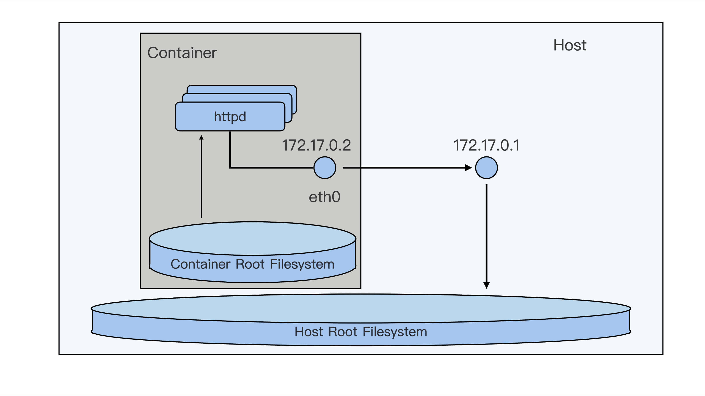
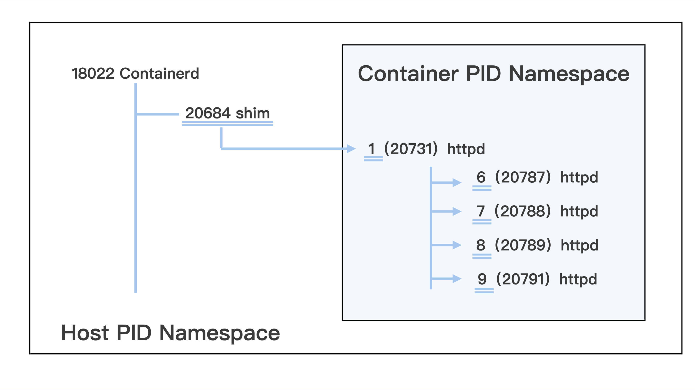
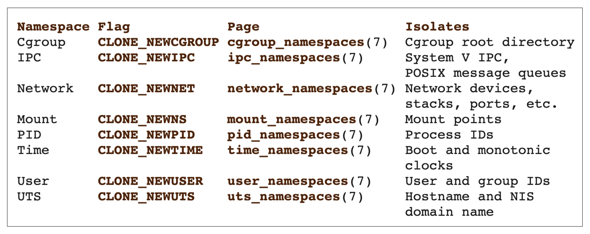
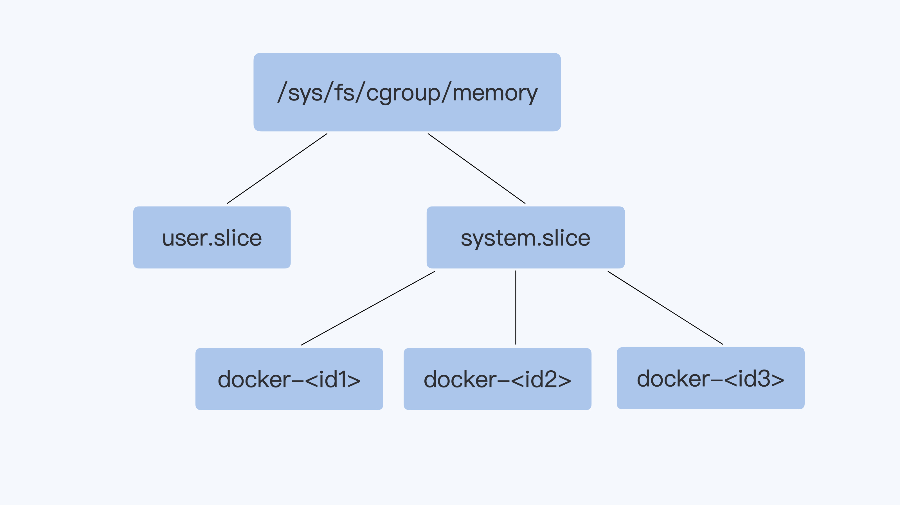

- 00 开篇词 一个态度两个步骤，成为容器实战高手.md.html
- 01 认识容器：容器的基本操作和实现原理.md.html
- 02 理解进程（1）：为什么我在容器中不能kill 1号进程？.md.html
- 03 理解进程（2）：为什么我的容器里有这么多僵尸进程？.md.html
- 04 理解进程（3）：为什么我在容器中的进程被强制杀死了？.md.html
- 05 容器CPU（1）：怎么限制容器的CPU使用？.md.html
- 06 容器CPU（2）：如何正确地拿到容器CPU的开销？.md.html
- 07 Load Average：加了CPU Cgroup限制，为什么我的容器还是很慢？.md.html
- 08 容器内存：我的容器为什么被杀了？.md.html
- 09 Page Cache：为什么我的容器内存使用量总是在临界点.md.html
- 10 Swap：容器可以使用Swap空间吗？.md.html
- 11 容器文件系统：我在容器中读写文件怎么变慢了.md.html
- 12 容器文件Quota：容器为什么把宿主机的磁盘写满了？.md.html
- 13 容器磁盘限速：我的容器里磁盘读写为什么不稳定.md.html
- 14 容器中的内存与IO：容器写文件的延时为什么波动很大？.md.html
- 15 容器网络：我修改了procsysnet下的参数，为什么在容器中不起效？.md.html
- 16 容器网络配置（1）：容器网络不通了要怎么调试.md.html
- 17 容器网络配置（2）：容器网络延时要比宿主机上的高吗.md.html
- 18 容器网络配置（3）：容器中的网络乱序包怎么这么高？.md.html
- 19 容器安全（1）：我的容器真的需要privileged权限吗.md.html
- 20 容器安全（2）：在容器中，我不以root用户来运行程序可以吗？.md.html
- 加餐01 案例分析：怎么解决海量IPVS规则带来的网络延时抖动问题？.md.html
- 加餐02 理解perf：怎么用perf聚焦热点函数？.md.html
- 加餐03 理解ftrace（1）：怎么应用ftrace查看长延时内核函数？.md.html
- 加餐04 理解ftrace（2）：怎么理解ftrace背后的技术tracepoint和kprobe？.md.html
- 加餐05 eBPF：怎么更加深入地查看内核中的函数？.md.html
- 加餐06 BCC：入门eBPF的前端工具.md.html
- 加餐福利 课后思考题答案合集.md.html
- 结束语 跳出舒适区，突破思考的惰性.md.html
01 认识容器：容器的基本操作和实现原理
你好，我是程远。作为一名工程师，我猜在过去的几年时间里，你肯定用过或者听人提起过容器（Container）。
说实话，容器这东西一点都不复杂，如果你只是想用的话，那跟着Docker 官网的说明，应该十来分钟就能搞定。
简单来说，它就是个小工具，可以把你想跑的程序，库文件啊，配置文件都一起“打包”。
然后，我们在任何一个计算机的节点上，都可以使用这个打好的包。有了容器，一个命令就能把你想跑的程序跑起来，做到了一次打包，就可以到处使用。
今天是咱们整个课程的第一讲，我想和你来聊聊容器背后的实现机制。
当然，空讲原理也没什么感觉，所以我还是会先带着你启动一个容器玩玩，然后咱们再一起来探讨容器里面的两大关键技术—— Namespace 和 Cgroups。基本上理解了这两个概念，你就能彻底搞懂容器的核心原理了。
做个镜像
话不多说，咱们就先动手玩一玩。启动容器的工具有很多，在这里我们还是使用 Docker 这个最常用的容器管理工具。
如果你之前根本没用过 Docker 的话，那我建议你先去官网看看文档，一些基础的介绍我就不讲了，那些内容你随便在网上一搜就能找到。
安装完 Docker 之后，咱们先来用下面的命令运行一个 httpd 服务。
# docker run -d centos/httpd:latest
这命令也很简单，run 的意思就是要启动一个容器， -d 参数里 d 是 Daemon 的首字母，也就是让容器在后台运行。
最后一个参数 centos/httpd:latest 指定了具体要启动哪一个镜像，比如这里咱们启动的是 centos/httpd 这个镜像的 latest 版本。
镜像是 Docker 公司的创举，也是一个伟大的发明。你想想，在没有容器之前，你想安装 httpd 的话，会怎么做？是不是得运行一连串的命令？甚至不同的系统上操作方法也不一样？
但你看，有了容器之后，你只要运行一条命令就搞定了。其实所有的玄机都在这个镜像里面。
镜像这么神奇，那它到底是怎么一回事呢？其实，镜像就是一个特殊的文件系统，
它提供了容器中程序执行需要的所有文件。具体来说，就是应用程序想启动，需要三类文件：相关的程序可执行文件、库文件和配置文件，这三类文件都被容器打包做好了。
这样，在容器运行的时候就不再依赖宿主机上的文件操作系统类型和配置了，做到了想在哪个节点上运行，就可以在哪个节点上立刻运行。
那么我们怎么来做一个容器镜像呢？
刚才的例子里，我们用的 centos/httpd:latest 这个镜像是 Docker 镜像库里直接提供的。当然，我们也可以自己做一个提供 httpd 服务的容器镜像，这里仍然可以用 Docker 这个工具来自定义镜像。
Docker 为用户自己定义镜像提供了一个叫做 Dockerfile 的文件，在这个 Dockerfile 文件里，你可以设定自己镜像的创建步骤。
如果我们自己来做一个 httpd 的镜像也不难，举个例子，我们可以一起来写一个 Dockerfile，体会一下整个过程。用 Dockerfile build image 的 Dockerfile 和对应的目录我放在这里了。
操作之前，我们首先要理解这个 Dockerfile 做了什么，其实它很简单，只有下面这 5 行：
# cat Dockerfile
FROM centos:8.1.1911
RUN yum install -y httpd
COPY file1 /var/www/html/
ADD file2.tar.gz /var/www/html/
CMD ["/sbin/httpd", "-D", "FOREGROUND"]
我们看下它做了哪几件事：在一个 centos 的基准镜像上安装好 httpd 的包，然后在 httpd 提供文件服务的配置目录下，把需要对外提供的文件 file1 和 file2 拷贝过去，最后指定容器启动以后，需要自动启动的 httpd 服务。
有了这个镜像，我们希望容器启动后，就运行这个 httpd 服务，让用户可以下载 file1 还有 file2 这两个文件。
我们具体来看这个 Dockerfile 的每一行，第一个大写的词都是 Dockerfile 专门定义的指令，也就是 FROM、RUN、COPY、ADD、CMD，这些指令都很基础，所以我们不做详细解释了，你可以参考 Dockerfile 的官方文档。
我们写完这个 Dockerfile 之后，想要让它变成一个镜像，还需要执行一下 docker build 命令。
下面这个命令中 -f ./Dockerfile 指定 Dockerfile 文件，-t registry/httpd:v1 指定了生成出来的镜像名，它的格式是"name:tag"，这个镜像名也是后面启动容器需要用到的。
# docker build -t registry/httpd:v1 -f ./Dockerfile .
docker build 执行成功之后，我们再运行 docker images 这个命令，就可以看到生成的镜像了。
# docker images
REPOSITORY TAG IMAGEID CREATED SIZE
registry/httpd v1 c682fc3d4b9a 4 seconds ago 277MB
启动一个容器 (Container)
做完一个镜像之后，你就可以用这个镜像来启动一个容器了，我们刚才做的镜像名字是 registry/httpd:v1，那么还是用 docker run 这个命令来启动容器。
# docker run -d registry/httpd:v1
容器启动完成后，我们可以用 docker ps 命令来查看这个已经启动的容器：
# docker ps
CONTAINER ID IMAGE COMMAND CREATED STATUS PORTS NAMES
c5a9ff78d9c1 registry/httpd:v1 "/sbin/httpd -D FORE…" 2 seconds ago Up 2 seconds loving_jackson
在前面介绍 Dockerfile 的时候，我们说过做这个镜像是用来提供 HTTP 服务的，也就是让用户可以下载 file1、file2 这两个文件。
那怎样来验证我们建起来的容器是不是正常工作的呢？可以通过这两步来验证：
第一步，我们可以进入容器的运行空间，查看 httpd 服务是不是启动了，配置文件是不是正确的。
第二步，对于 HTTP 文件服务，如果我们能用 curl 命令下载文件，就可以证明这个容器提供了我们预期的 httpd 服务。
我们先来做第一步验证，我们可以运行 docker exec 这个命令进入容器的运行空间，至于什么是容器的运行空间，它的标准说法是容器的命名空间（Namespace），这个概念我们等会儿再做介绍。
进入容器运行空间之后，我们怎么确认 httpd 的服务进程已经在容器里启动了呢？
我们运行下面这个 docker exec 命令，也就是执行 docker exec c5a9ff78d9c1 ps -ef ，可以看到 httpd 的服务进程正在容器的空间中运行。
# docker exec c5a9ff78d9c1 ps -ef
UID PID PPID C STIME TTY TIME CMD
root 1 0 0 01:59 ? 00:00:00 /sbin/httpd -D FOREGROUND
apache 6 1 0 01:59 ? 00:00:00 /sbin/httpd -D FOREGROUND
apache 7 1 0 01:59 ? 00:00:00 /sbin/httpd -D FOREGROUND
apache 8 1 0 01:59 ? 00:00:00 /sbin/httpd -D FOREGROUND
apache 9 1 0 01:59 ? 00:00:00 /sbin/httpd -D FOREGROUND
这里我解释一下，在这个 docker exec 后面紧跟着的 ID 表示容器的 ID，这个 ID 就是我们之前运行 docker ps 查看过那个容器，容器的 ID 值是 c5a9ff78d9c1 。在这个 ID 值的后面，就是我们要在容器空间里运行的 ps -ef 命令。
接下来我们再来确认一下，httpd 提供文件服务的目录中 file1 和 file2 文件是否存在。
我们同样可以用 docker exec 来查看一下容器的文件系统中，httpd 提供文件服务的目录 /var/www/html 是否有这两个文件。
很好，我们可以看到 file1、file2 这两个文件也都放在指定目录中了。
# docker exec c5a9ff78d9c1 ls /var/www/html
file1
file2
到这里我们完成了第一步的验证，进入到容器的运行空间里，验证了 httpd 服务已经启动，配置文件也是正确的。
那下面我们要做第二步的验证，用 curl 命令来验证是否可以从容器的 httpd 服务里下载到文件。
如果要访问 httpd 服务，我们就需要知道这个容器的 IP 地址。容器的网络空间也是独立的，有一个它自己的 IP。我们还是可以用 docker exec 进入到容器的网络空间，查看一下这个容器的 IP。
运行下面的这条 docker exec c5a9ff78d9c1 ip addr 命令，我们可以看到容器里网络接口 eth0 上配置的 IP 是 172.17.0.2 。
这个 IP 目前只能在容器的宿主机上访问，在别的机器上目前是不能访问的。关于容器网络的知识，我们会在后面的课程里介绍。
# docker exec c5a9ff78d9c1 ip addr
1: lo: <LOOPBACK,UP,LOWER_UP> mtu 65536 qdisc noqueue state UNKNOWN group default qlen 1000
link/loopback 00:00:00:00:00:00 brd 00:00:00:00:00:00
inet 127.0.0.1/8 scope host lo
valid_lft forever preferred_lft forever
168: [email protected]: <BROADCAST,MULTICAST,UP,LOWER_UP> mtu 1500 qdisc noqueue state UP group default
link/ether 02:42:ac:11:00:02 brd ff:ff:ff:ff:ff:ff link-netnsid 0
inet 172.17.0.2/16 brd 172.17.255.255 scope global eth0
valid_lft forever preferred_lft forever
好了，获取了 httpd 服务的 IP 地址之后，我们随便下载一个文件试试，比如选 file2。
我们在宿主机上运行 curl ，就可以下载这个文件了，操作如下。很好，文件下载成功了，这证明了我们这个提供 httpd 服务的容器正常运行了。
# curl -L -O http://172.17.0.2/file2
% Total % Received % Xferd Average Speed Time Time Time Current Dload Upload Total Spent Left Speed
100 6 100 6 0 0 1500 0 --:--:-- --:--:-- --:--:-- 1500
# ls
file2
上面的步骤完成之后，我们的第二步验证，用 curl 下载 httpd 服务提供的文件也成功了。
好了，我们刚才自己做了容器镜像，用这个镜像启动了容器，并且用 docker exec 命令检查了容器运行空间里的进程、文件和网络设置。
通过这上面的这些操作练习，估计你已经初步感知到，容器的文件系统是独立的，运行的进程环境是独立的，网络的设置也是独立的。但是它们和宿主机上的文件系统，进程环境以及网络感觉都已经分开了。
我想和你说，这个感觉没错，的确是这样。我们刚才启动的容器，已经从宿主机环境里被分隔出来了，就像下面这张图里的描述一样。

从用户使用的角度来看，容器和一台独立的机器或者虚拟机没有什么太大的区别，但是它和虚拟机相比，却没有各种复杂的硬件虚拟层，没有独立的 Linux 内核。
容器所有的进程调度，内存访问，文件的读写都直接跑在宿主机的内核之上，这是怎么做到的呢？
容器是什么
要回答这个问题，你可以先记住这两个术语 Namespace 和 Cgroups。如果有人问你 Linux 上的容器是什么，最简单直接的回答就是 Namesapce 和 Cgroups。Namespace 和 Cgroups 可以让程序在一个资源可控的独立（隔离）环境中运行，这个就是容器了。
我们现在已经发现：容器的进程、网络还有文件系统都是独立的。那问题来了，容器的独立运行环境到底是怎么创造的呢？这就要提到 Namespace 这个概念了。所以接下来，就先从我们已经有点感觉的 Namespace 开始分析。
Namespace
接着前面的例子，我们正好有了一个正在运行的容器，那我们就拿这个运行的容器来看看 Namespace 到底是什么？
在前面我们运行 docker exec c5a9ff78d9c1 ps -ef，看到了 5 个 httpd 进程，而且也只有这 5 个进程。
# docker exec c5a9ff78d9c1 ps -ef
UID PID PPID C STIME TTY TIME CMD
root 1 0 0 01:59 ? 00:00:00 /sbin/httpd -D FOREGROUND
apache 6 1 0 01:59 ? 00:00:00 /sbin/httpd -D FOREGROUND
apache 7 1 0 01:59 ? 00:00:00 /sbin/httpd -D FOREGROUND
apache 8 1 0 01:59 ? 00:00:00 /sbin/httpd -D FOREGROUND
apache 9 1 0 01:59 ? 00:00:00 /sbin/httpd -D FOREGROUND
如果我们不用 docker exec，直接在宿主机上运行 ps -ef，就会看到很多进程。如果我们运行一下 grep httpd ，同样可以看到这 5 个 httpd 的进程：
# ps -ef | grep httpd
UID PID PPID C STIME TTY TIME CMD
root 20731 20684 0 18:59 ? 00:00:01 /sbin/httpd -D FOREGROUND
48 20787 20731 0 18:59 ? 00:00:00 /sbin/httpd -D FOREGROUND
48 20788 20731 0 18:59 ? 00:00:06 /sbin/httpd -D FOREGROUND
48 20789 20731 0 18:59 ? 00:00:05 /sbin/httpd -D FOREGROUND
48 20791 20731 0 18:59 ? 00:00:05 /sbin/httpd -D FOREGROUN
这两组输出结果到底有什么差别呢，你可以仔细做个对比，最大的不同就是进程的 PID 不一样。那为什么 PID 会不同呢？或者说，运行 docker exec c5a9ff78d9c1 ps -ef 和 ps -ef 实质的区别在哪里呢？
如果理解了 PID 为何不同，我们就能搞清楚 Linux Namespace 的概念了，为了方便后文的讲解，我们先用下面这张图来梳理一下我们看到的 PID。

Linux 在创建容器的时候，就会建出一个 PID Namespace，PID 其实就是进程的编号。这个 PID Namespace，就是指每建立出一个 Namespace，就会单独对进程进行 PID 编号，每个 Namespace 的 PID 编号都从 1 开始。
同时在这个 PID Namespace 中也只能看到 Namespace 中的进程，而且看不到其他 Namespace 里的进程。
这也就是说，如果有另外一个容器，那么它也有自己的一个 PID Namespace，而这两个 PID Namespace 之间是不能看到对方的进程的，这里就体现出了 Namespace 的作用：相互隔离。
而在宿主机上的 Host PID Namespace，它是其他 Namespace 的父亲 Namespace，可以看到在这台机器上的所有进程，不过进程 PID 编号不是 Container PID Namespace 里的编号了，而是把所有在宿主机运行的进程放在一起，再进行编号。
讲了 PID Namespace 之后，我们了解到 Namespace 其实就是一种隔离机制，主要目的是隔离运行在同一个宿主机上的容器，让这些容器之间不能访问彼此的资源。
这种隔离有两个作用：第一是可以充分地利用系统的资源，也就是说在同一台宿主机上可以运行多个用户的容器；第二是保证了安全性，因为不同用户之间不能访问对方的资源。
除了 PID Namespace，还有其他常见的 Namespace 类型，比如我们之前运行了 docker exec c5a9ff78d9c1 ip addr 这个命令去查看容器内部的 IP 地址，这里其实就是在查看 Network Namespace。
在 Network Namespace 中都有一套独立的网络接口比如这里的 lo，eth0，还有独立的 TCP/IP 的协议栈配置。
# docker exec c5a9ff78d9c1 ip addr
1: lo: <LOOPBACK,UP,LOWER_UP> mtu 65536 qdisc noqueue state UNKNOWN group default qlen 1000
link/loopback 00:00:00:00:00:00 brd 00:00:00:00:00:00
inet 127.0.0.1/8 scope host lo
valid_lft forever preferred_lft forever
168: [email protected]: <BROADCAST,MULTICAST,UP,LOWER_UP> mtu 1500 qdisc noqueue state UP group default
link/ether 02:42:ac:11:00:02 brd ff:ff:ff:ff:ff:ff link-netnsid 0
inet 172.17.0.2/16 brd 172.17.255.255 scope global eth0
valid_lft forever preferred_lft forever
我们还可以运行 docker exec c5a9ff78d9c1 ls/ 查看容器中的根文件系统（rootfs）。然后，你会发现，它和宿主机上的根文件系统也是不一样的。容器中的根文件系统，其实就是我们做的镜像。
那容器自己的根文件系统完全独立于宿主机上的根文件系统，这一点是怎么做到的呢？其实这里依靠的是 Mount Namespace，Mount Namespace 保证了每个容器都有自己独立的文件目录结构。
Namespace 的类型还有很多，我们查看"Linux Programmer's Manual"，可以看到 Linux 中所有的 Namespace：cgroup/ipc/network/mount/pid/time/user/uts。
在这里呢，你需要记住的是 Namespace 是 Linux 中实现容器的两大技术之一，它最重要的作用是保证资源的隔离。在后面的课程，讲解到具体问题时，我会不断地提到 Namespace 这个概念。

好了，我们刚才说了 Namespace，这些 Namespace 尽管类型不同，其实都是为了隔离容器资源：PID Namespace 负责隔离不同容器的进程，Network Namespace 又负责管理网络环境的隔离，Mount Namespace 管理文件系统的隔离。
正是通过这些 Namespace，我们才隔离出一个容器，这里你也可以把它看作是一台“计算机”。
既然是一台“计算机”，你肯定会问这个“计算机”有多少 CPU，有多少 Memory 啊？那么 Linux 如何为这些“计算机”来定义 CPU，定义 Memory 的容量呢？
Cgroups
想要定义“计算机”各种容量大小，就涉及到支撑容器的第二个技术 Cgroups （Control Groups）了。Cgroups 可以对指定的进程做各种计算机资源的限制，比如限制 CPU 的使用率，内存使用量，IO 设备的流量等等。
Cgroups 究竟有什么好处呢？要知道，在 Cgroups 出现之前，任意一个进程都可以创建出成百上千个线程，可以轻易地消耗完一台计算机的所有 CPU 资源和内存资源。
但是有了 Cgroups 这个技术以后，我们就可以对一个进程或者一组进程的计算机资源的消耗进行限制了。
Cgroups 通过不同的子系统限制了不同的资源，每个子系统限制一种资源。每个子系统限制资源的方式都是类似的，就是把相关的一组进程分配到一个控制组里，然后通过树结构进行管理，每个控制组都设有自己的资源控制参数。
完整的 Cgroups 子系统的介绍，你可以查看Linux Programmer's Manual 中 Cgroups 的定义。
这里呢，我们只需要了解几种比较常用的 Cgroups 子系统：
CPU 子系统，用来限制一个控制组（一组进程，你可以理解为一个容器里所有的进程）可使用的最大 CPU。
memory 子系统，用来限制一个控制组最大的内存使用量。
pids 子系统，用来限制一个控制组里最多可以运行多少个进程。
cpuset 子系统， 这个子系统来限制一个控制组里的进程可以在哪几个物理 CPU 上运行。
因为 memory 子系统的限制参数最简单，所以下面我们就用 memory 子系统为例，一起看看 Cgroups 是怎么对一个容器做资源限制的。
对于启动的每个容器，都会在 Cgroups 子系统下建立一个目录，在 Cgroups 中这个目录也被称作控制组，比如下图里的"docker-

还记得，我们之前用 Docker 创建的那个容器吗？在每个 Cgroups 子系统下，对应这个容器就会有一个目录 docker-c5a9ff78d9c1……这个容器的 ID 号，容器中所有的进程都会储存在这个控制组中 cgroup.procs 这个参数里。
你看下面的这些进程号是不是很熟悉呢？没错，它们就是前面我们用 ps 看到的进程号。
我们实际看一下这个例子里的 memory Cgroups，它可以控制 Memory 的使用量。比如说，我们将这个控制组 Memory 的最大用量设置为 2GB。
具体操作是这样的，我们把（2* 1024 * 1024 * 1024 = 2147483648）这个值，写入 memory Cgroup 控制组中的 memory.limit_in_bytes 里，这样设置后，cgroup.procs 里面所有进程 Memory 使用量之和，最大也不会超过 2GB。
# cd /sys/fs/cgroup/memory/system.slice/docker-c5a9ff78d9c1fedd52511e18fdbd26357250719fa0d128349547a50fad7c5de9.scope
# cat cgroup.procs
20731
20787
20788
20789
20791
# echo 2147483648 > memory.limit_in_bytes
# cat memory.limit_in_bytes
2147483648
刚刚我们通过 memory Cgroups 定义了容器的 memory 可以使用的最大值。其他的子系统稍微复杂一些，但用法也和 memory 类似，我们在后面的课程中会结合具体的实例来详细解释其他的 Cgroups。
这里我们还要提一下 Cgroups 有 v1 和 v2 两个版本：
Cgroups v1 在 Linux 中很早就实现了，各种子系统比较独立，每个进程在各个 Cgroups 子系统中独立配置，可以属于不同的 group。
虽然这样比较灵活，但是也存在问题，会导致对同一进程的资源协调比较困难（比如 memory Cgroup 与 blkio Cgroup 之间就不能协作）。虽然 v1 有缺陷，但是在主流的生产环境中，大部分使用的还是 v1。
Cgroups v2 做了设计改进，解决了 v1 的问题，使各个子系统可以协调统一地管理资源。
不过 Cgroups v2 在生产环境的应用还很少，因为该版本很多子系统的实现需要较新版本的 Linux 内核，还有无论是主流的 Linux 发行版本还是容器云平台，比如 Kubernetes，对 v2 的支持也刚刚起步。
所以啊，我们在后面 Cgroups 的讲解里呢，主要还是用 Cgroups v1 这个版本，在磁盘 I/O 的这一章中，我们也会介绍一下 Cgroups v2。
好了，上面我们解读了 Namespace 和 Cgroups 两大技术，它们是 Linux 下实现容器的两个基石，后面课程中要讨论的容器相关问题，或多或少都和 Namespace 或者 Cgroups 相关，我们会结合具体问题做深入的分析。
目前呢，你只需要先记住这两个技术的作用，Namespace 帮助容器来实现各种计算资源的隔离，Cgroups 主要限制的是容器能够使用的某种资源量。
重点总结
这一讲，我们对容器有了一个大致的认识，包括它的“形”，一些基本的容器操作；还有它的“神”，也就是容器实现的原理。
启动容器的基本操作是这样的，首先用 Dockerfile 来建立一个容器的镜像，然后再用这个镜像来启动一个容器。
那启动了容器之后，怎么检验它是不是正常工作了呢？
我们可以运行 docker exec 这个命令进入容器的运行空间，查看进程是否启动，检查配置文件是否正确，检验我们设置的服务是否能够正常提供。
我们用 docker exec 命令查看了容器的进程，网络和文件系统，就能体会到容器的文件系统、运行的进程环境和网络的设置都是独立的，所以从用户使用的角度看，容器和一台独立的机器或者虚拟机没有什么太大的区别。
最后，我们一起学习了 Namespace 和 Cgroups，它们是 Linux 的两大技术，用于实现容器的特性。
具体来说，Namespace 帮助容器实现各种计算资源的隔离，Cgroups 主要对容器使用某种资源量的多少做一个限制。
所以我们在这里可以直接记住：容器其实就是 Namespace+Cgroups。
思考题
用 Dockerfile 为你最熟悉的应用程序做个镜像，然后用 Docker 命令启动这个容器。
欢迎在留言区分享你的疑惑和见解。你也可以把今天的内容分享给你的朋友，和他一起学习和进步。